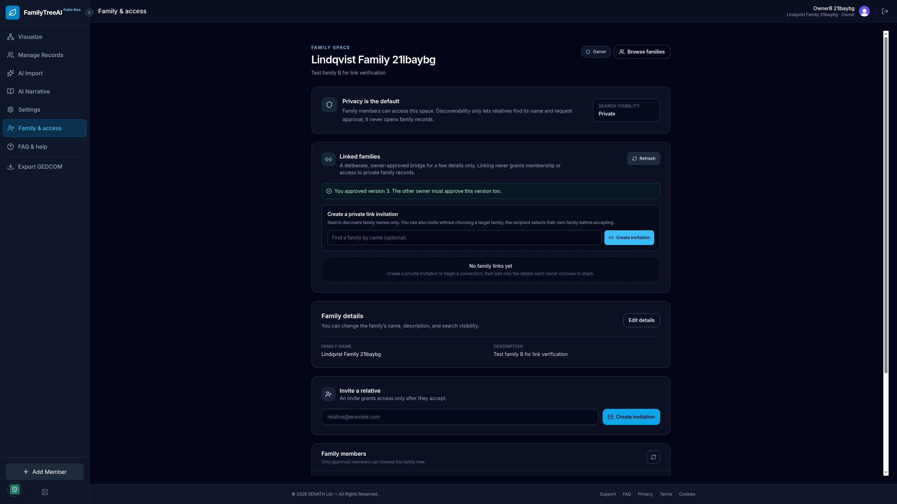
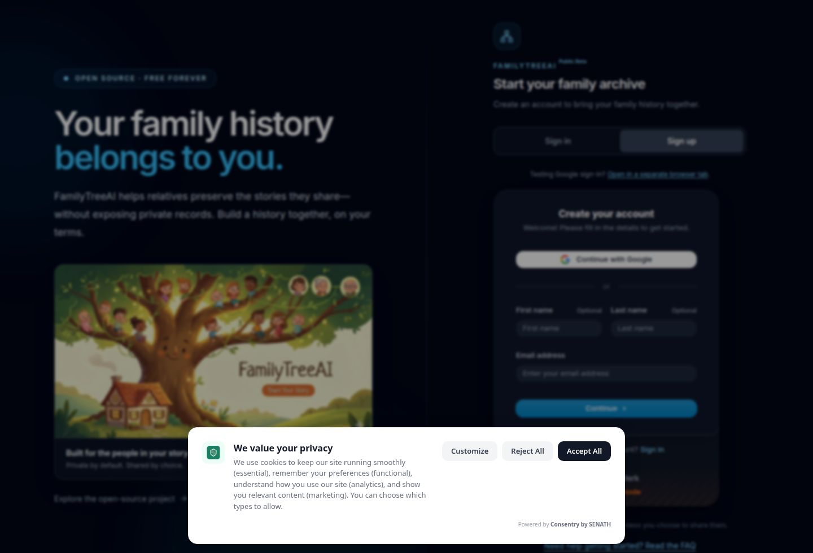

Preserve the people, records, and stories that connect you. Create a private family workspace or join your relatives, build your tree together, and connect related families without opening up private records. AI writing tools help turn the facts you have recorded into drafts you can review.


Built around a fast, draggable tree, real AI helpers, and a refreshing absence of subscription dialogs.
Pan, zoom, and drag any node. Toggle between descendants and ancestors. Search to jump to anyone in your tree instantly.
Generate a respectful, grounded biography for any person from the basics you've recorded — names, dates, places.
Paste an obituary or a sentence and the AI extracts a structured person record — name, gender, dates, places — ready to add.
Pick a focus person and get a 350–600 word narrative woven from your records — strictly grounded, no fabrication.
Built-in Google Gemini for the fastest start, plus OpenAI, Anthropic, Zhipu GLM, and Moonshot Kimi via your own API key.
Your provider keys are encrypted with AES-256-GCM, bound to your user via AAD, and decrypted only at the moment of an LLM call.
After sign-up, create a private family or join with an invitation. Search shows only families whose owners opted into discovery; requests need owner approval before records become accessible.
Download your tree as a standard GEDCOM file at any time. Take it to any other genealogy program — no lock-in.
Attach birth certificates, marriage certificates, passports, census records, and more to any person. Upload PDFs or images (up to 5 MB each) and download them any time.
People, relationships, family access, and recording metadata live in PostgreSQL, not Firebase. Voice files use private App Storage rather than the database.
Owners exchange a private invitation and propose connections between people. Both owners approve the same version before members see deliberately shared details. Linking never merges trees or grants membership in another family.
Upload an existing audio file to a saved person record alongside certificates and other documents. Maximum three minutes and 10 MB; playback, download, and deletion require family access. Requires private App Storage; hosted upload verification is pending storage setup.
Find practical answers in the app’s FAQ or submit a support request through the support form—without having to email a public support address.
All AI calls are dispatched from the server. Your provider API keys never reach the browser bundle, and the only place they're decrypted is the exact moment we're about to make an LLM request on your behalf.
Authenticated encryption from Node's built-in crypto. Each ciphertext is bound to (userId, provider) via AAD — rows can't be shuffled between users or providers.
Every /api/ai/* route sits behind Clerk authentication. The browser never sees provider keys, only the model's response.
Settings reads return booleans. Decryption fires once per request, immediately before the LLM call, and the plaintext is never logged or persisted.
On startup the server runs an encrypt → decrypt round-trip and logs a loud, unmissable error if the master key is missing or wrong, so misconfiguration never goes unnoticed.
Node.js, PostgreSQL, and Clerk. The full app needs a server; GitHub Pages hosts this informational page only.
Use Node.js 22+ and PostgreSQL. Install dependencies, then configure a Clerk application for authentication.
Use development Clerk keys locally and separate production keys for production builds. Configure Gemini or a supported personal AI key for AI features. Voice uploads additionally require private App Storage.
One command runs the Express + Vite server on port 5000. Schema is bootstrapped automatically on first boot.
Create a family after signing up. Invite relatives in Family & access, or enable discovery so they can request access. AgentMail email delivery is optional; invitation links can also be shared directly.
# 1. Clone the repo git clone https://github.com/nzicecool/FamliyTreeAI.git cd FamliyTreeAI # 2. Install dependencies npm install # 3. Set environment variables export DATABASE_URL="postgres://user:pw@host/db" export CLERK_SECRET_KEY="sk_test_REPLACE_ME" export VITE_CLERK_PUBLISHABLE_KEY="pk_test_REPLACE_ME" export GEMINI_API_KEY="AIza…" # Generate once for a new installation; keep stable and backed up export ENCRYPTION_KEY="$(openssl rand -base64 32)" # Optional invitation email delivery export AGENTMAIL_API_KEY="…" # 4. Run it npm run dev # Open http://localhost:5000
| Variable | Required? | What it does |
|---|---|---|
| DATABASE_URL | Required | Postgres connection string for your tree, settings, and invites. |
| CLERK_SECRET_KEY | Development | Server-side development Clerk key (sk_test_ prefix). |
| VITE_CLERK_PUBLISHABLE_KEY | Development | Browser-side development Clerk key (pk_test_ prefix). |
| CLERK_SECRET_KEY_PROD | Production | Server-side production Clerk key (sk_live_ prefix); no fallback to development. |
| VITE_CLERK_PUBLISHABLE_KEY_PROD | Production build | Production Clerk publishable key (pk_live_ prefix), available when npm run build runs. |
| GEMINI_API_KEY | Recommended | Powers the built-in AI default. Without it, only BYO providers work. |
| ENCRYPTION_KEY | Recommended | Stable, base64-encoded 32-byte key. Legacy fallback uses CLERK_SECRET_KEY, even in production. Never change existing encryption material without a migration. |
| AGENTMAIL_API_KEY | Optional | Sends invite emails when admins invite collaborators. |
| VOICE_STORAGE_BUCKET_ID_DEV / VOICE_STORAGE_BUCKET_ID_PROD | Optional IDs | Select private App Storage buckets; omitted uses the project default. A bucket and SDK access are still required for voice files. |
| GROWTHFLOWAI_API_KEY_DEV / GROWTHFLOWAI_API_KEY_PROD | Optional | Environment-specific, server-only support ticket keys. |
| GROWTHFLOWAI_FT_API_KEY_DEV / GROWTHFLOWAI_FT_API_KEY_PROD | Optional | Separate server-only product event keys. Analytics consent is required; authenticated events can include verified email and name. |
For production, configure Clerk’s production domain and Google connection, provide both production Clerk keys, then run npm run build and npm run start. Keep secrets outside Git. Read the full setup guide for encryption and non-Replit voice-storage requirements.
After signing up, choose either option. Accept an invitation using the invited email address, or search opted-in families and request access. Only approved members can view family records.
No. The owners approve a connection and explicitly selected person details. Neither family receives access to the other’s full tree, documents, or recordings. Editing shared connection details requires renewed approval from both owners.
The Voice memories section accepts existing audio files up to three minutes and 10 MB on a saved person record. It is an upload feature, not in-app microphone recording or transcription. Private App Storage must be configured; live hosted upload verification is pending that setup.
No. This is the project’s static information page. Use the hosted Public Beta or self-host the Node.js server with PostgreSQL and Clerk. AI services and hosting may have their own costs; review AI-generated text before sharing it.
Explore the Public Beta or run your own instance. Start with a private family, invite your relatives, and preserve your history together.